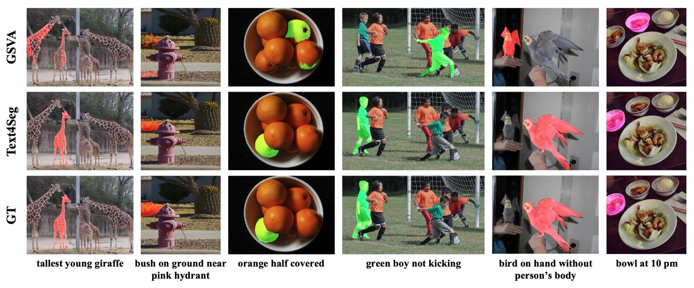
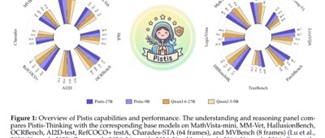

Qi Song*, Honglin Li*, Y. Yu, H. Zhou, L. Yang, Song Bai, Qi She, Zilong Huang†, Yunqing Zhao†
CVPR, 2026
Thinking with images through adaptive visual coding. A multimodal model learns when and how to use tools, writes executable code, and checks the visual evidence it creates. Tech lead and corresponding author.

IEEE TPAMI, 2026
Token-efficient segmentation through generative language modeling. Compact textual mask representations reduce sequence length and speed up inference, without a separate mask decoder. Tech lead and corresponding author.

Heyun Chen, Xiaohan Lan, Jiaxi Li, …, Xudong Zhang, Yunqing Zhao, Shuai Zheng
Technical Report, 2026
Multimodal models trained with interleaved distillation and reinforcement learning for reasoning and long-horizon agentic tasks.
My contribution: post-training trajectory synthesis and benchmark evaluation for long-horizon agentic multimodal understanding.